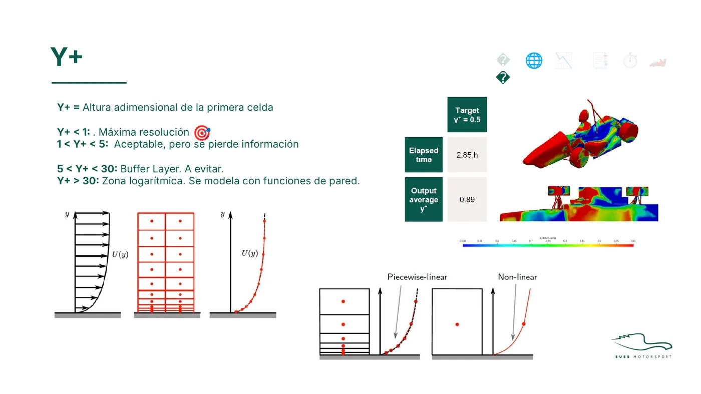
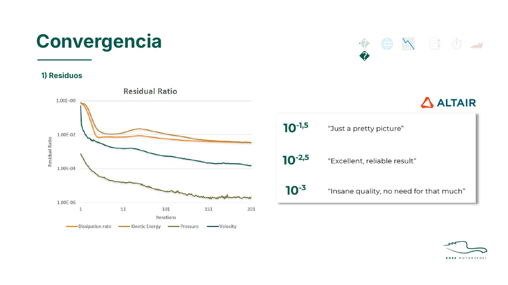
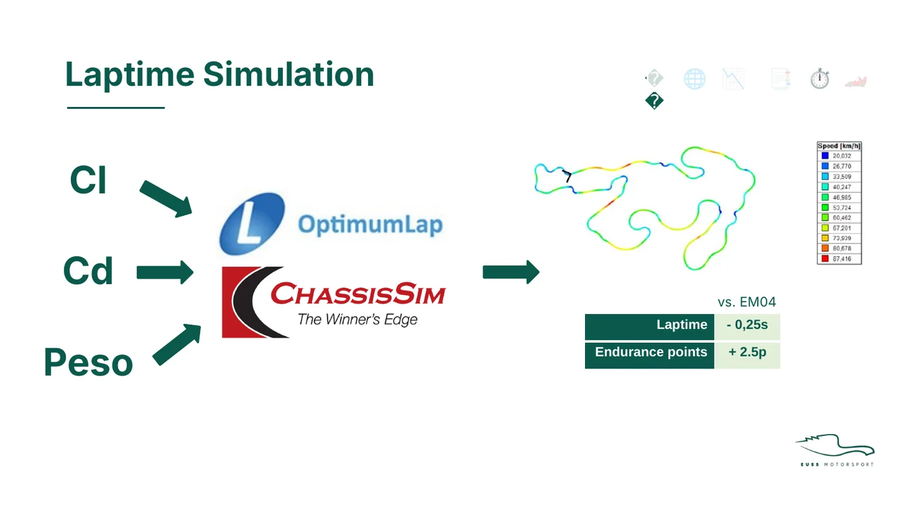
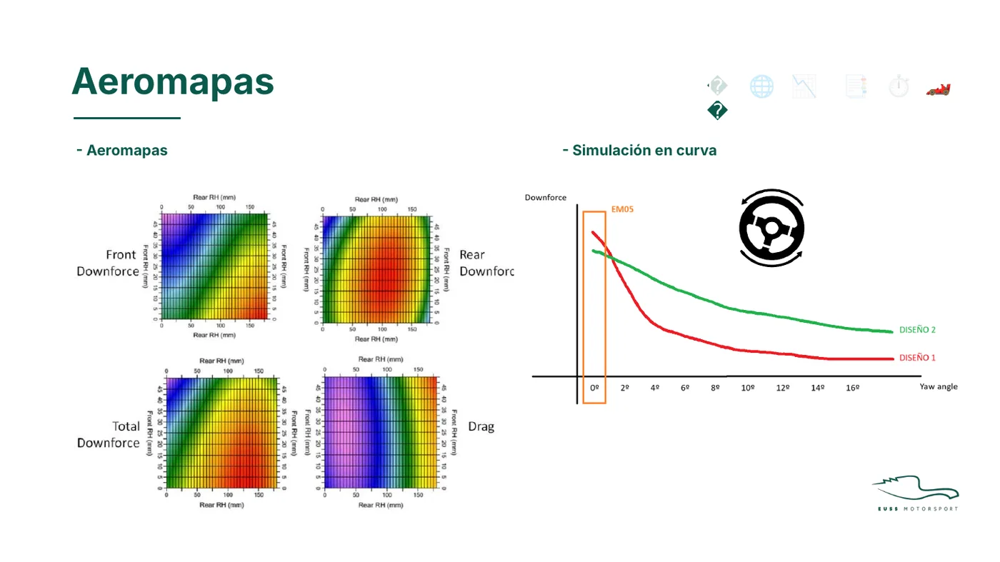

October 2025 · EUSS Motorsport · Aerodynamics department · Training material
Aerodynamics and CFD training course
I wrote a course to take new aerodynamics members through the team's whole design loop: setting objectives, CAD and meshing, running and converging a simulation, post-processing, lap-time simulation and aero maps. It builds on what I learned designing the EM05 package, and the team reused it to train the next intake the following season.
- CFD process
- Meshing and y+
- Convergence
- Lap-time simulation
- Aero maps

01Why a course
When the aerodynamics department was reinstated for the EM05, a generational change had left the team with little aerodynamics knowledge, and much of what I learned designing the package lived in my thesis. The course turns that into a process new members can follow, so each season's design does not start from zero.
02What it covers
- Objectives. Setting targets as percentage changes for each component, illustrated with the EM05 nosecone study (low nose: full-car downforce +16.48 %).
- CAD and meshing. Element counts and what they cost: about 10 million elements and 20 h per run for the EM06, against roughly 70 million for a typical Formula Student team and 150 million in about 4 h for F1. Mesh sensitivity, and what each y+ band means: below 1 for full resolution, 1–5 acceptable, 5–30 the buffer layer to avoid, and above 30 the log-law region modelled with wall functions.
- Simulation. Judging convergence on residuals, monitors and flow patterns. For AcuSolve residuals the course gives a rule of thumb: 10−1.5 is "just a pretty picture", 10−2.5 is a reliable result, and 10−3 is more than the job needs. It also shows how lowering the relaxation factor smooths the monitors.
- Post-processing. The difference between Cl/Cd and CLA/CDA and why the reference area matters, then pressure coefficient, total pressure coefficient (energy loss with and without separation), CpT = 0 iso-surfaces and streamlines.
- Lap-time simulation. Feeding Cl, Cd and mass into OptimumLap or ChassisSim to turn coefficients into lap time and points. The EM05 example: about 0.25 s per lap and 2.5 endurance points relative to the previous package.
- Aero maps. Front, rear and total downforce and drag maps, plus simulation in cornering conditions. My thesis had listed aero maps and more operating conditions as the next steps beyond straight-line runs.




03Principles
The course closes on three principles I wanted the department to keep:
- The goal is to train engineers, not to build a pretty car.
- Don't copy F1 or other teams. Decide with your own data.
- It is fine not to know something, as long as you know that you don't know it.
Source: my course slides, Formación Aerodinámica y CFD, EUSS Motorsport (version reused for the 2026–27 intake).